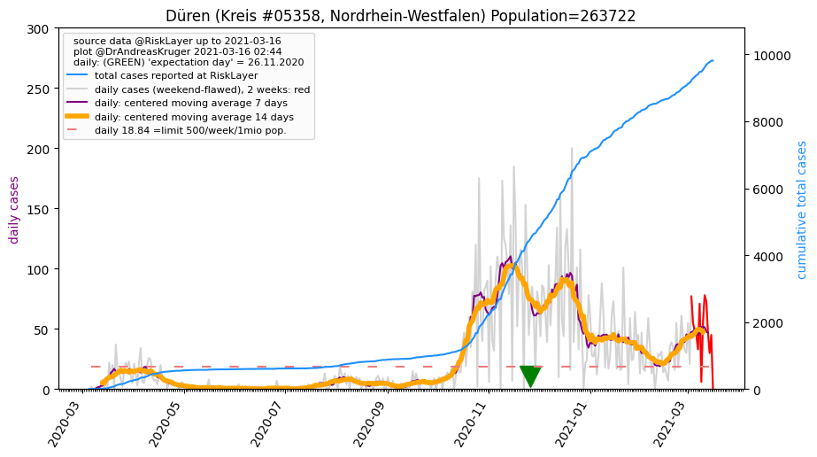
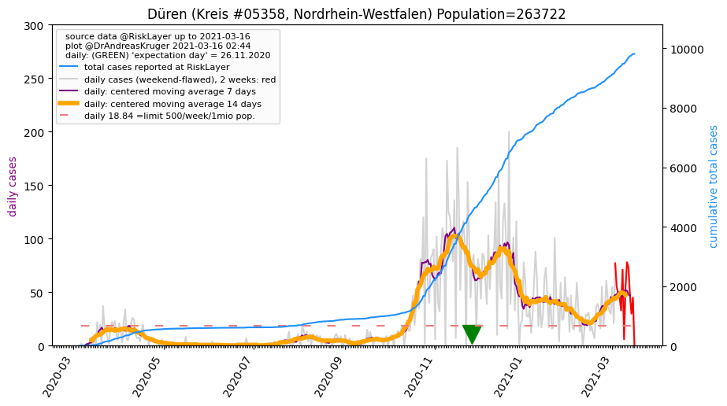

")
")
")

")
")
")
")
| Euskirchen_KR (0.0 km) |
Ahrweiler_LK (29.5 km) |
Vulkaneifel_LK (34.0 km) |
| Düren_KR (34.3 km)  |
Städteregion Aachen_KR (37.0 km) |
Bonn_KS (38.0 km) |
| Rhein-Erft-Kreis_KR (41.3 km) |
Rhein-Sieg-Kreis_KR (48.6 km) |
All plots are regenerated with new data every night. Beware this temporary hotspot is an experimental page - it might get removed, so please do not link to it. Instead link to project http://tiny.cc/cov19de.